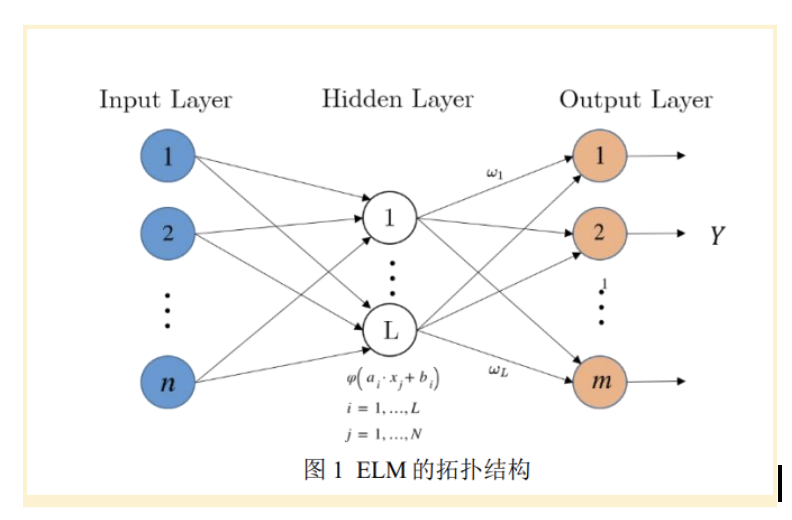

Project Overview
FPGA based accelerator trained on an extreme learning machine model, allowing real time online and offline analysis of real data for medical purposes.
Architecture & Design
Extreme Learning Machine is a type of feedforward Neural Network and its advantage is that only the output weights are required to be calculated while the input weights of the neurons are being randomly assigned. The structure consists of an input layer, one hidden layer and an output layer.

Challenges & Solutions
Challenge: QR Decomposition for Parallel Calculation. Explain the difficulties in implementing Givens Rotation in hardware. How did you handle floating-point or fixed-point arithmetic?
Solution: Describe your approach. Mention any specific Vivado IP blocks used or custom RTL written to overcome this hurdle.